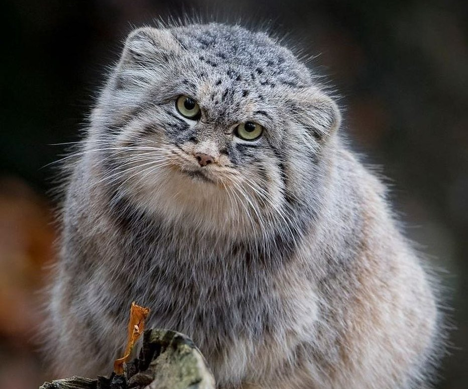
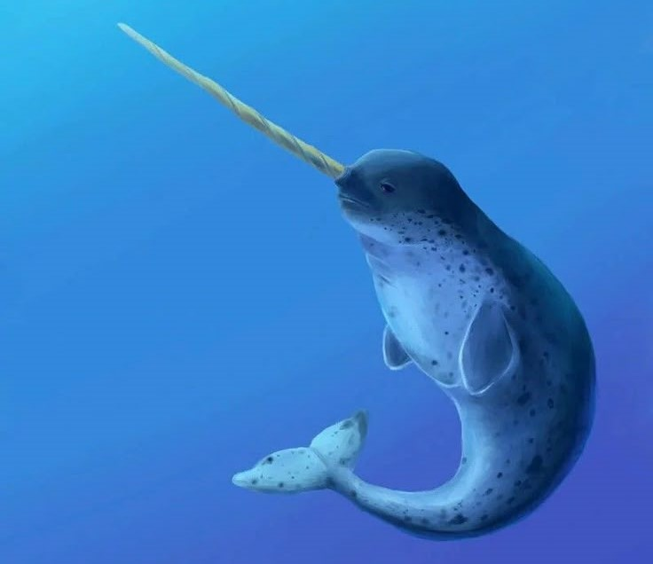

Манул

Манул или Палласова кошка — самая дикая и даже опасная кошка в дикой природе. Хотя на вид она небольшая и весьма милая, однако эта дикая кошка является хищником. Который не очень то будет рад встрече с человеком.
Место обитания
Кошка обитает в районах Алтая, Тувы, Бурятии и Забайкалья - в основном, в районах, изобилующих степями, которые являются для этой дикой кошки идеальными укрытиями. Манулы прекрасно приспособлены к жизни в холоде и снеге, у них самая густая шерсть среди всех кошек в мире, что позволяет им выдерживать метели и снежные бури.
Причины исчезновения
Это происходит по нескольким причинам, например, очень часто браконьеры расставляют ловушки и капканы в запрещенных местах, угрозу жизни могут предоставлять и собаки охотников или пастухов. Если в районах его обитания зима достаточно суровая или снежная, то по этой причине может сокращаться число грызунов, которые являются основной пищей манулов. В настоящее время охота запрещена во всех странах обитания данного вида, за ними ведется усиленный контроль.
Нарвал

Животное вида кита с длинным бивнем — этакий морской единорог, единственный в своем роде. Нарвал это уникальное животное. Он использует свой рог, чтобы пробить лед и выбраться на поверхность. Они могут погружаться на километровую глубину. Рог также они используют в качестве защиты, хотя сами являются весьма спокойными существами.
Место обитания
Основные места обитания нарвала: Канадский архипелаг и берега Гренландии, воды Шпицбергена, Земля Франца-Иосифа и воды вокруг северной оконечности Северного острова Новой Земли.
Причины исчезновения
Список проблем нарвала не заканчивается браконьерством — ему также приходится бороться с загрязнением мировых вод. Были попытки разведения их в неволе, но чуткое животное не может должным образом адаптироваться к искусственной среде обитания.
Командорский голубой лис
Медновский песец или командорский песец -это подвид песца
Место обитания
Обитают только на острове Медный, входящем в состав Командорских островов в Баренцевом море.
Причины исчезновения
В 1970-е годы резко сократилось количество детенышей лис, многие из которых заболели ушной чесоткой. Весь вид оказался под угрозой исчезновения. Сегодня количество редких голубых песцов в Командорском заповеднике на Камчатке, значительно увеличилось за два года на 49%. Службы заповедника сообщают, что количество особей достигло 500 экземпляров.
Крапчатый суслик
Крапчатый суслик — вид грызунов из рода сусликов семейства беличьих.
Место обитания
Самый мелкий вид сусликов обитает в степях и лесостепях Восточно-Европейской равнины, от Дуная до среднего течения Волги. Суслики заселяют выгоны по склонам оврагов, луговые нераспаханные участки, склоны холмов. Активны летом, в дневные часы. Селятся обычно колониями.
Причины исчезновения
В последние десятилетия из-за сплошной распашки земель, выжигания травы и использования ядохимикатов этот забавный зверек довольно сильно сократил область своего расселения и оказался среди 14 млекопитающих, впервые попавших в последнюю - 2020 года - редакцию Красной книги России.
Дальневосточная черепаха
Редчайший вид пресноводных черепах. Отличается круглым панцирем, напоминающим сковородку, длинной шеей, вытянутыми челюстями и мягким хоботком с ноздрями. С помощью последнего черепаха может набирать воздух с поверхности, оставляя все тело под водой, что позволяет ей скрываться от хищников.
Место обитания
Встречается в Азии: Восточном Китае, Вьетнаме, Корее, Японии, а также на островах Хайнань, Тайвань. В пределах России встречается на юге Дальнего Востока — крайней северной границе ареала. Населяет бассейны рек Амур, Уссури и их крупные притоки, а также озеро Ханка.
Причины исчезновения
Тем не менее, пресмыкающееся стремительно исчезает, причем не столько из-за инвазивных хищников, сколько из-за человека: браконьеры отлавливают взрослых особей, а местные рыбаки собирают яйца для употребления в пищу.